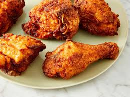

Fried Chicken
Crispy on the outside and juicy on the inside, fried chicken is a beloved classic. Chicken pieces are marinated in buttermilk for tenderness, then coated in a seasoned flour mixture before being deep-fried to golden perfection. It's a flavorful and satisfying dish enjoyed by many.
Ingredients
- 3 lbs chicken pieces (legs, thighs, breasts, etc.)
- 2 cups buttermilk
- 2 cups all-purpose flour
- 1 tablespoon paprika
- 1 tablespoon garlic powder
- 1 tablespoon onion powder
- 1 teaspoon cayenne pepper
- 1 teaspoon dried thyme
- Salt and pepper to taste
- Vegetable oil for frying
Procedure
- Marinate chicken in buttermilk in the refrigerator for at least 2 hours or overnight.
- In a large bowl, combine flour, paprika, garlic powder, onion powder, cayenne pepper, thyme, salt, and pepper.
- Heat oil in a deep fryer or large skillet to 350°F (175°C).
- Remove chicken from buttermilk, allowing excess to drip off. Dredge chicken pieces in the seasoned flour, pressing the flour onto the chicken.
- Fry chicken in batches, avoiding overcrowding, until golden brown and cooked through (internal temperature should reach 165°F or 74°C), about 12-15 minutes per batch.
- Drain on paper towels and let rest before serving.